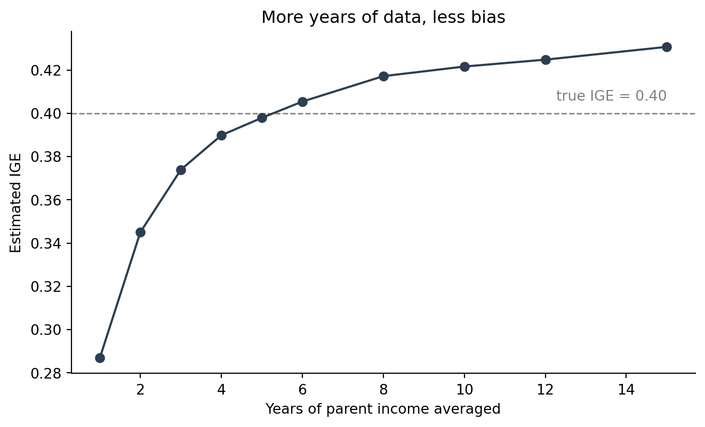

How much does a parent’s income predict their child’s? Economists summarise it with one number, the intergenerational elasticity (IGE): the slope from regressing the child’s log income on the parent’s log income. An IGE of 0 means where you start says nothing about where you end up; an IGE of 1 means income is perfectly inherited. For the US, estimates cluster around 0.4–0.5.
This is a tutorial, so I do one thing differently from a normal post: I simulate the data, setting the true IGE to exactly 0.40. That way we know the right answer, and can see which method recovers it. The method itself — matching parents to children with SQL, then comparing income measured one year versus averaged over many — is exactly what you would run on real panel data like the PSID.
Code
import numpy as np, pandas as pd, sqlite3rng = np.random.default_rng(6400)N, TRUE_IGE =4000, 0.40sd_perm, sd_trans =0.55, 0.45# each family has one parent and one child; "permanent" = lifetime log incomeparent_perm = rng.normal(10.5, sd_perm, N)child_perm =6.3+ TRUE_IGE*parent_perm + rng.normal(0, sd_perm*np.sqrt(1-TRUE_IGE**2)*1.4, N)def hump(age): # income rises then flattens over a careerreturn0.03*(age-25) -0.0009*(age-25)**2YEARS =range(2005, 2020) # 15 observed yearsind, income = [], []for i inrange(N): p_age0 = rng.integers(40, 46) c_age0 = p_age0 -28+ rng.integers(-2, 3)for role, perm, age0, pid in [("parent", parent_perm[i], p_age0, 2*i), ("child", child_perm[i], c_age0, 2*i+1)]: ind.append((pid, i, role)) # person_id, family_id, rolefor k, yr inenumerate(YEARS): # one noisy income reading per year logY = perm + hump(age0+k) + rng.normal(0, sd_trans) income.append((pid, yr, float(np.exp(logY))))individuals = pd.DataFrame(ind, columns=["person_id","family_id","role"])income = pd.DataFrame(income, columns=["person_id","year","income"])
We now have two tidy tables, exactly the shape real survey data arrives in: individuals (who is whose, by family_id) and income (one row per person per year). The whole problem is joining them correctly.
Matching parents to children with SQL
I load both tables into an in-memory SQLite database and let SQL do the matching. Four ideas carry the entire analysis:
SELECT picks columns.
JOIN ... ON stitches two tables together where a key matches — here, family_id links a parent row to the right child row.
GROUP BY collapses many rows into one per group.
AVG(...) is the aggregation that runs inside each group.
Code
con = sqlite3.connect(":memory:")individuals.to_sql("individuals", con, index=False)income.to_sql("income", con, index=False)def matched(parent_years):"""Return one row per family: parent income and child income (log-ready).""" yrs =",".join(map(str, parent_years)) query =f""" WITH child_avg AS ( -- child's long-run income SELECT i.family_id, AVG(inc.income) AS child_income FROM individuals i JOIN income inc ON i.person_id = inc.person_id WHERE i.role = 'child' GROUP BY i.family_id ), parent_inc AS ( -- parent income over chosen years SELECT i.family_id, AVG(inc.income) AS parent_income FROM individuals i JOIN income inc ON i.person_id = inc.person_id WHERE i.role = 'parent' AND inc.year IN ({yrs}) GROUP BY i.family_id ) SELECT p.family_id, p.parent_income, c.child_income FROM parent_inc p JOIN child_avg c ON p.family_id = c.family_id """return pd.read_sql(query, con)
The two WITH blocks each build a small table — the child’s average income and the parent’s income — and the final JOIN lines them up family by family. Switching the parent income from one year to many is now a one-line change: the list of years we pass in.
Measured from a single year of parent income, the estimated IGE is 0.27 — far below the true 0.40 we built in. Averaged over five years, it rises to 0.39, essentially the right answer.
Why the gap? Any one year of income is permanent income plus a transitory shock — a good or bad year. That random noise in the parent measure (the thing on the x-axis) drags the estimated slope toward zero, a textbook case of attenuation from measurement error. Economists call the version tied to when in a career you measure life-cycle bias: a single snapshot, especially early or late, is a poor stand-in for lifetime income. Averaging several years cancels the year-to-year noise and recovers the real relationship.
Code
import matplotlib.pyplot as pltns = [1,2,3,4,5,6,8,10,12,15]est = [ige(matched(list(YEARS)[:n])) for n in ns]fig, ax = plt.subplots(figsize=(7,4.3))ax.axhline(TRUE_IGE, ls="--", color="grey", lw=1)ax.text(15, TRUE_IGE+0.006, "true IGE = 0.40", ha="right", color="grey")ax.plot(ns, est, "-o", color="#2c3e50")ax.set_xlabel("Years of parent income averaged")ax.set_ylabel("Estimated IGE")ax.set_title("More years of data, less bias")ax.spines[["top","right"]].set_visible(False)plt.tight_layout(); plt.show()

Figure 1: Estimated IGE as more years of parent income are averaged. One year badly understates how much income carries across generations; around five years recovers the true value.
The curve makes the lesson concrete: the estimate climbs steeply from one year to about five, then flattens near the truth. The first few years of extra data buy the most accuracy.
Figure 2: Child vs. parent income (logs). The single-year fit is flatter than the five-year fit — the same families, two ways of measuring the parent, two different answers.
Takeaway
Matching parents to children is a join; measuring their incomes is a group-and- average; and the econometric lesson falls straight out of the result. With one year of parent income the data say mobility is higher than it really is (IGE 0.27 versus the true 0.40); with a five-year average the bias is mostly gone. The practical rule that follows — and the reason mobility studies insist on multi-year income — is simple: to measure where someone stands over a lifetime, don’t trust a single year.
A caveat on what this does and doesn’t show. The data are simulated, so the point is the method, not an estimate of real US mobility; and I let noise, not a bad measurement year, drive the bias — real life-cycle bias also depends on the age at which income is observed, which a richer model would vary.
This is a self-contained tutorial: the panel is simulated in the code above with a fixed random seed, so anyone who runs the document reproduces every number and figure exactly, with no external data to download. SQL is run through Python’s built-in sqlite3; estimation uses numpy.
Source Code
---title: "Like Parent, Like Child: Measuring Economic Mobility with SQL in Python"author: "Siyu Xin"date: 2026-10-23categories: - tutorial - inequality - SQLformat: html: toc: true toc-depth: 2 code-fold: show code-tools: true theme: cosmojupyter: python3execute: warning: false message: false---# What we are measuring, and why it is trickyHow much does a parent's income predict their child's? Economists summarise itwith one number, the **intergenerational elasticity (IGE)**: the slope fromregressing the child's log income on the parent's log income. An IGE of 0 meanswhere you start says nothing about where you end up; an IGE of 1 means income isperfectly inherited. For the US, estimates cluster around 0.4–0.5.This is a tutorial, so I do one thing differently from a normal post: I **simulate**the data, setting the true IGE to exactly **0.40**. That way we know the rightanswer, and can see which method recovers it. The method itself — matching parentsto children with SQL, then comparing income measured one year versus averaged overmany — is exactly what you would run on real panel data like the PSID.```{python}#| label: simulateimport numpy as np, pandas as pd, sqlite3rng = np.random.default_rng(6400)N, TRUE_IGE =4000, 0.40sd_perm, sd_trans =0.55, 0.45# each family has one parent and one child; "permanent" = lifetime log incomeparent_perm = rng.normal(10.5, sd_perm, N)child_perm =6.3+ TRUE_IGE*parent_perm + rng.normal(0, sd_perm*np.sqrt(1-TRUE_IGE**2)*1.4, N)def hump(age): # income rises then flattens over a careerreturn0.03*(age-25) -0.0009*(age-25)**2YEARS =range(2005, 2020) # 15 observed yearsind, income = [], []for i inrange(N): p_age0 = rng.integers(40, 46) c_age0 = p_age0 -28+ rng.integers(-2, 3)for role, perm, age0, pid in [("parent", parent_perm[i], p_age0, 2*i), ("child", child_perm[i], c_age0, 2*i+1)]: ind.append((pid, i, role)) # person_id, family_id, rolefor k, yr inenumerate(YEARS): # one noisy income reading per year logY = perm + hump(age0+k) + rng.normal(0, sd_trans) income.append((pid, yr, float(np.exp(logY))))individuals = pd.DataFrame(ind, columns=["person_id","family_id","role"])income = pd.DataFrame(income, columns=["person_id","year","income"])```We now have two tidy tables, exactly the shape real survey data arrives in:`individuals` (who is whose, by `family_id`) and `income` (one row per person peryear). The whole problem is joining them correctly.# Matching parents to children with SQLI load both tables into an in-memory SQLite database and let SQL do the matching.Four ideas carry the entire analysis:- **`SELECT`** picks columns.- **`JOIN ... ON`** stitches two tables together where a key matches — here,`family_id` links a parent row to the right child row.- **`GROUP BY`** collapses many rows into one per group.- **`AVG(...)`** is the aggregation that runs inside each group.```{python}#| label: sql-matchcon = sqlite3.connect(":memory:")individuals.to_sql("individuals", con, index=False)income.to_sql("income", con, index=False)def matched(parent_years):"""Return one row per family: parent income and child income (log-ready).""" yrs =",".join(map(str, parent_years)) query =f""" WITH child_avg AS ( -- child's long-run income SELECT i.family_id, AVG(inc.income) AS child_income FROM individuals i JOIN income inc ON i.person_id = inc.person_id WHERE i.role = 'child' GROUP BY i.family_id ), parent_inc AS ( -- parent income over chosen years SELECT i.family_id, AVG(inc.income) AS parent_income FROM individuals i JOIN income inc ON i.person_id = inc.person_id WHERE i.role = 'parent' AND inc.year IN ({yrs}) GROUP BY i.family_id ) SELECT p.family_id, p.parent_income, c.child_income FROM parent_inc p JOIN child_avg c ON p.family_id = c.family_id """return pd.read_sql(query, con)```The two `WITH` blocks each build a small table — the child's average income andthe parent's income — and the final `JOIN` lines them up family by family.Switching the parent income from one year to many is now a one-line change: thelist of years we pass in.# One year of income is not enough```{python}#| label: estimatedef ige(df): x, y = np.log(df.parent_income), np.log(df.child_income)return np.polyfit(x, y, 1)[0] # slope = IGEone_year = matched([2010]) # parent income, single snapshotfive_year = matched(range(2008, 2013)) # parent income, 5-year averageige_single = ige(one_year)ige_multi = ige(five_year)```Measured from a **single year** of parent income, the estimated IGE is`{python} f"{ige_single:.2f}"` — far below the true **0.40** we built in. Averagedover **five years**, it rises to `{python} f"{ige_multi:.2f}"`, essentially theright answer.Why the gap? Any one year of income is permanent income plus a transitory shock —a good or bad year. That random noise in the *parent* measure (the thing on thex-axis) drags the estimated slope toward zero, a textbook case of attenuation frommeasurement error. Economists call the version tied to *when* in a career youmeasure **life-cycle bias**: a single snapshot, especially early or late, is a poorstand-in for lifetime income. Averaging several years cancels the year-to-yearnoise and recovers the real relationship.```{python}#| label: fig-curve#| fig-cap: "Estimated IGE as more years of parent income are averaged. One year badly understates how much income carries across generations; around five years recovers the true value."import matplotlib.pyplot as pltns = [1,2,3,4,5,6,8,10,12,15]est = [ige(matched(list(YEARS)[:n])) for n in ns]fig, ax = plt.subplots(figsize=(7,4.3))ax.axhline(TRUE_IGE, ls="--", color="grey", lw=1)ax.text(15, TRUE_IGE+0.006, "true IGE = 0.40", ha="right", color="grey")ax.plot(ns, est, "-o", color="#2c3e50")ax.set_xlabel("Years of parent income averaged")ax.set_ylabel("Estimated IGE")ax.set_title("More years of data, less bias")ax.spines[["top","right"]].set_visible(False)plt.tight_layout(); plt.show()```The curve makes the lesson concrete: the estimate climbs steeply from one year toabout five, then flattens near the truth. The first few years of extra data buy themost accuracy.```{python}#| label: fig-scatter#| fig-cap: "Child vs. parent income (logs). The single-year fit is flatter than the five-year fit — the same families, two ways of measuring the parent, two different answers."fig, ax = plt.subplots(figsize=(7,4.3))xs = np.log(five_year.parent_income)ax.scatter(xs, np.log(five_year.child_income), s=6, alpha=0.15, color="#2c7fb8")grid = np.linspace(xs.min(), xs.max(), 50)for df, lab, col in [(one_year, f"single year (IGE {ige_single:.2f})", "#c0392b"), (five_year, f"5-yr average (IGE {ige_multi:.2f})", "#2c3e50")]: b1, b0 = np.polyfit(np.log(df.parent_income), np.log(df.child_income), 1) ax.plot(grid, b0 + b1*grid, color=col, lw=2, label=lab)ax.set_xlabel("Parent log income"); ax.set_ylabel("Child log income")ax.legend(frameon=False); ax.spines[["top","right"]].set_visible(False)plt.tight_layout(); plt.show()```# TakeawayMatching parents to children is a join; measuring their incomes is a group-and-average; and the econometric lesson falls straight out of the result. With one yearof parent income the data say mobility is higher than it really is (IGE`{python} f"{ige_single:.2f}"` versus the true 0.40); with a five-year average thebias is mostly gone. The practical rule that follows — and the reason mobilitystudies insist on multi-year income — is simple: **to measure where someone standsover a lifetime, don't trust a single year.**A caveat on what this does and doesn't show. The data are simulated, so the pointis the *method*, not an estimate of real US mobility; and I let noise, not a badmeasurement year, drive the bias — real life-cycle bias also depends on the age atwhich income is observed, which a richer model would vary.---*This is a self-contained tutorial: the panel is simulated in the code above with afixed random seed, so anyone who runs the document reproduces every number andfigure exactly, with no external data to download. SQL is run through Python'sbuilt-in `sqlite3`; estimation uses `numpy`.*